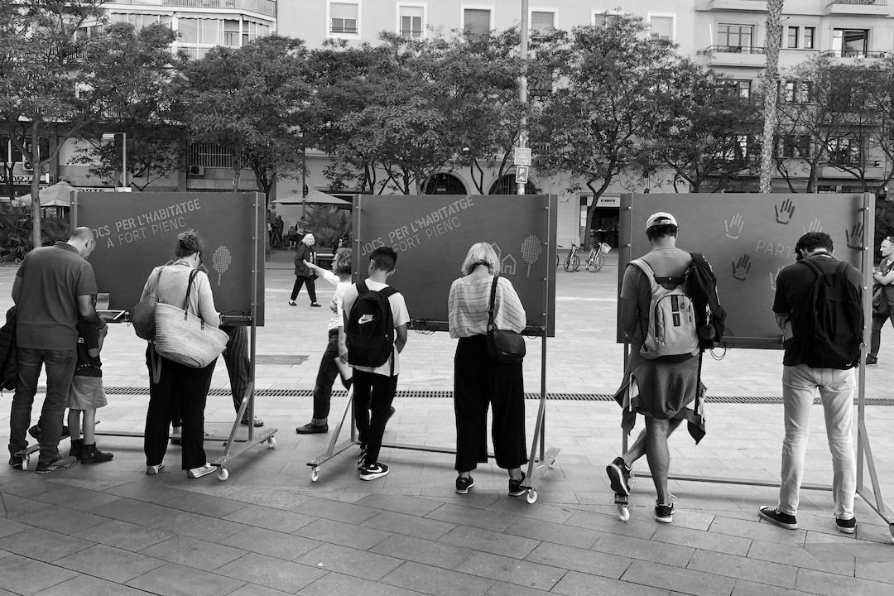
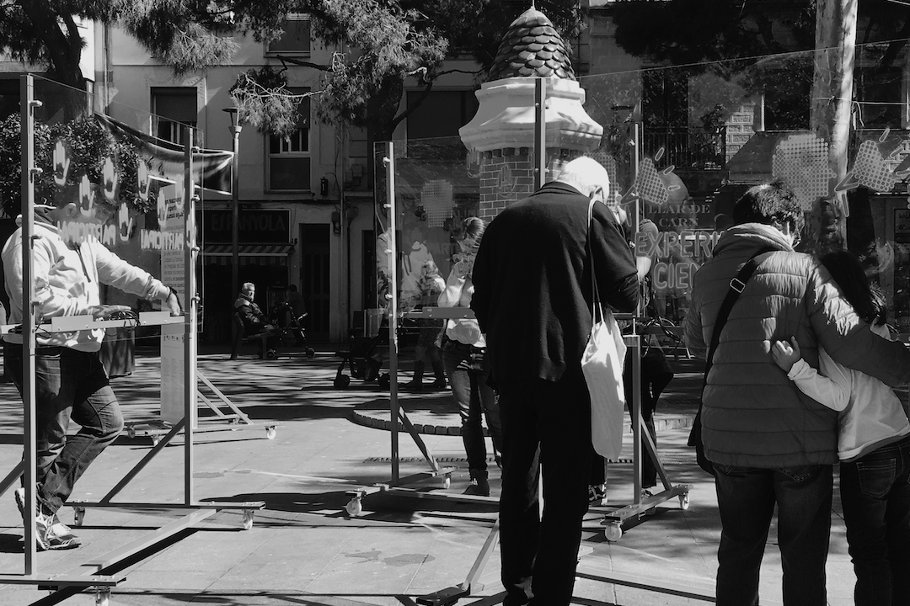
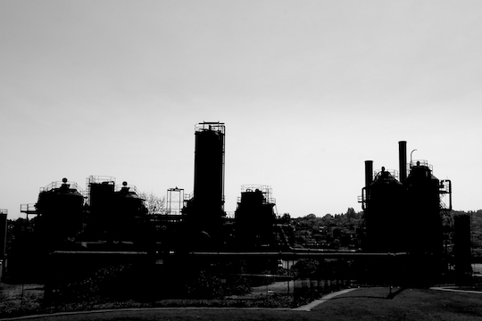
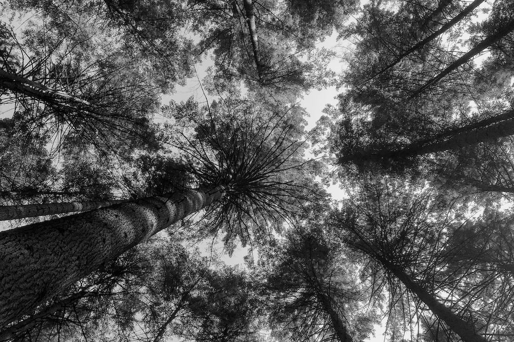
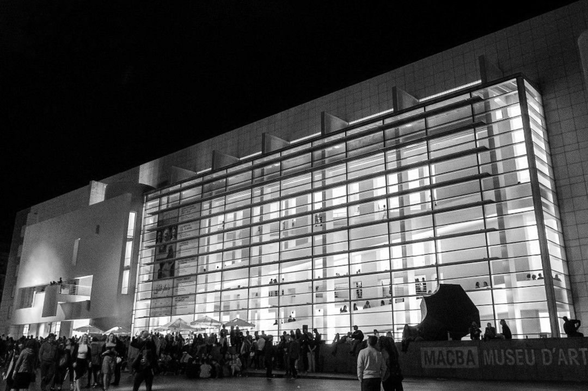
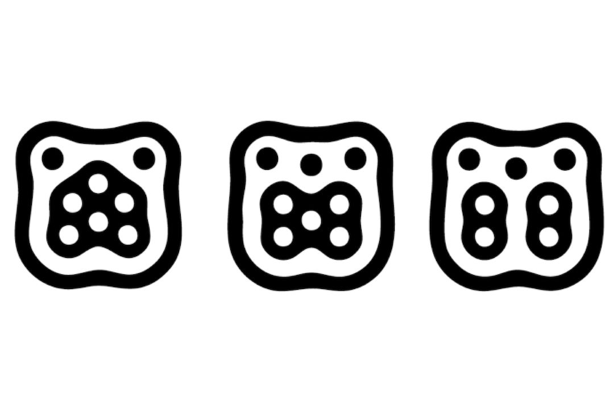

September 6th, 2020
Projects
MediaFutures

© Marjory Collins | New York Times newsroom (1942)
MediaFutures is an H2020 project whose main goal is building a European data innovation hub, including funding, mentoring, and support for entrepreneurial and creative projects to reshape the media value chain through responsible, innovative uses of data. Our main contribution from Eurecat is to make a wide catalogue of open data resources and free open source technologies for data exploitation available. This includes datasets and tools for data collection, exploration and exploitation produced by the project's partners, as well as publicly available resources. Besides, we provide active support of non-technical aspects as well as experiment design and methodology to ensure valid and reliable results from the engagement with data from different sources including social media platforms, citizen science projects, open government and participative democracy platforms, etc. This project was has received funding from the European Union’s Horizon 2020 innovation action programme under grant agreement No. 951962.
November 28th, 2019
Project
© Public Domain | Red Cross Library Service. Brisbane, 1944
Publication of «Citizen Science in Libraries», a crowdsourced toolkit for and by librarians and citizens. Librarians proposed ten multidisciplinary citizen science projects to perform in libraries with library-goers within the specific context of each library. This toolkit was curated in co-creation sessions in the «Citizen Science Laboratory» through workshops facilitated by the members of OpenSystems in order to build a citizens science community around Barcelona libraries. This project was funded by Diputació de Barcelona in the framework of BiblioLab.
October 1st, 2019
Project

© OpenSystems | Games for Housing. Fort Pienc
«Citizen Science in Action» aimed to co-create a citizen science experiment focused on a social concern shared by the community around libraries, for and by library-goers, in three Barcelona municipalities (Granollers, Olesa de Montserrat and Fort Pienc). From this collaborative process emerged the shared concern of access to housing. All the participants formulated and conceptualized an intervention in the public space to collect evidence to answer different research questions. The result was «Jocs per l’Habitatge» («Games for Housing»), an intervention in public spaces which consisted in four days of data collection about different dilemmas that citizens face when citizens and policy-makers intervene in the housing market.

© OpenSystems | La Torrassa, L'Hospitalet de Llobregat
«Aigua de Barri» («Neighborhood Water») was a project that consisted of a series of workshops facilitated by OpenSystems members in cooperation with Ítaca, an organization from L’Hospitalet de Llobregat dedicated to out-of-school education for children and young people. The main objective of the project was to perform citizen science activities, as well as to organize a final performance in the public space using social dilemmas and game theory to puzzle over the use of basic resources like water. The project was funded by Fundació Agbar.
© Thomas Vilhelm | Biennal Ciutat i Ciencia
Ephemeral collective research action that aims to understand the interactions occurring in public spaces from a gender perspective. Citizen Social Lab collects data to better understand diverse human interactions in urban contexts in which a given conflict makes us face a social dilemma. This project allows us to research individual conflicts in situations of public violence. «Consciencies» was designed within the framework of the Biennal Ciutat i Ciència, a festival organized by the City of Barcelona, and performed again in the citizen science festival Calidoscopi by OpenSystems, Nus and the feminist students collective of Elisava.
© Tasmanian Archive | Teaching Aids Centre, 1951 - 1973
Participation in «STEM4Youth», an H2020 project that aims to promote STEM education through key scientific challenges and to enhance its impact on our life and career perspectives. The project introduced citizen science in schools in a radical manner by performing collective and participatory experiments in Barcelona, Polonia and Greece. These experiments studied public concerns such as gender inequalities, air quality or water pollution, which emerged from co-design sessions with students [final report]. This research is performed by means of behavioural experiments, game theory and using Citizen Social Lab, a participatory platform to perform collective experiments in the wild. This project has received funding from the European Union’s Horizon 2020 research and innovation programme under grant agreement No. 710577.
February 15th, 2018
Project

© Julián Vicens | Gas Works Park, Seattle, USA
«xAire» is a project that proposes a collective measurement of air quality in Barcelona, particularly monitoring air pollution by nitrogen dioxide (NO2), one of the most important pollutants in the city. This project brings together twenty schools in the city of Barcelona from ten districts to install more than 800 sensors that will help to provide a more accurate mapping of air quality in the city. This project is carried out on The City Station, a pop-up environmental health clinic built in the public space that put emphasis on the collective research and public participation in science. This project is possible thanks to the sponsorship of DKV and 4sfera and to the collaboration of Mobile Week Barcelona, ISGlobal, Mapping for Change, OpenSystems, and the participation of 20 schools in Barcelona. The City Station is part of CCCB's exhibition «After the end of the world».
December 1st, 2017
Project

© Julián Vicens | Pacific Spirit Reginal Park, Vancouver. Canada
«Natural Patterns» is a project that delves into the relationship between Science and Nature. By means of a system that promotes the observation of Nature as a canvas to present the research process, we are able to unveil the implications of science in the formation of patterns and their impact, beyond natural science, in art, design, architecture or music.
© Rae Bathgame | MACBA, Barcelona
«Museum Night Experiment» is a citizen science experiment created to observe, capture and analyze the "cultural behaviour" of attendants to «La Nit dels Museus» in Barcelona («Museums at Night»). The main objective is to analyse the patterns generated by citizens when massively visiting museums and cultural centers in order to understand participation profiles and establish a more efficient relationship between citizens, cultural equipments and the city.
September 1st, 2011
Project

© Julián Vicens | TUIO Fiducials
This project was part of my Engineering Thesis focused on the design and development of a natural user inteface and a tridimensional audio system. The thesis was based in previous works in human computer interaction and audio processing. The final artifact creates a sound experience by means of a system that reacts in real-time to the fiducials placed on a table-top user interface. Each fiducial corresponds to a particular sound represented in a tridimensional environment created on a natural user interface working with TUIO protocols.